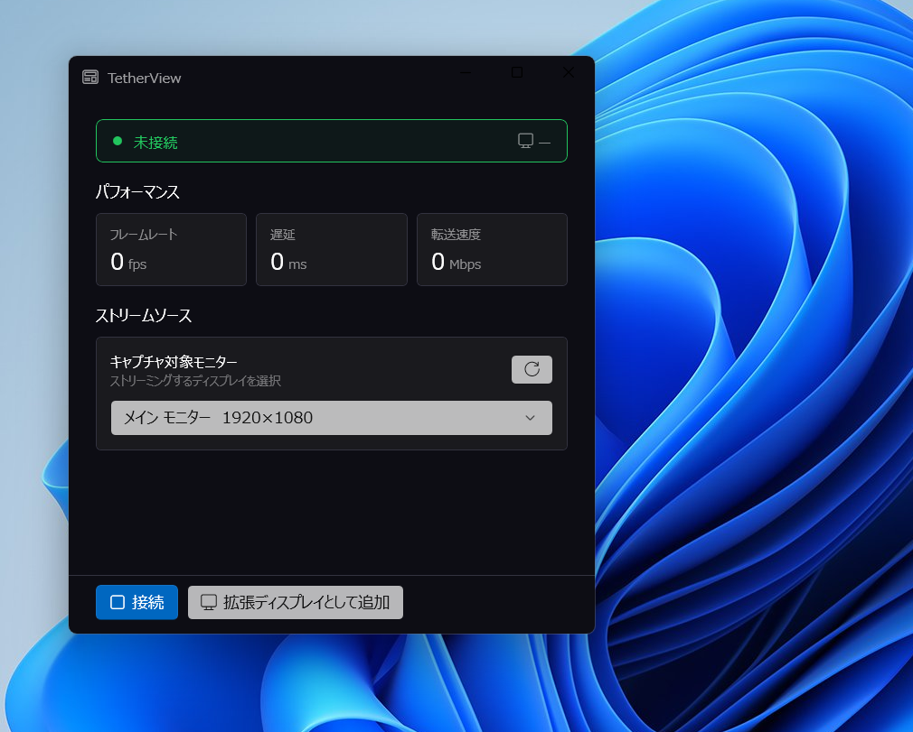
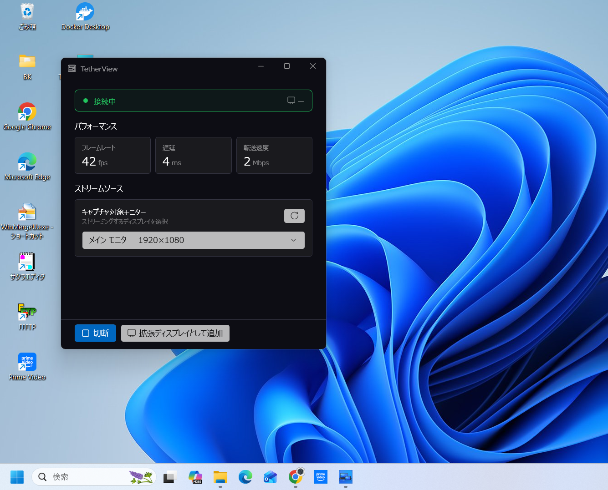
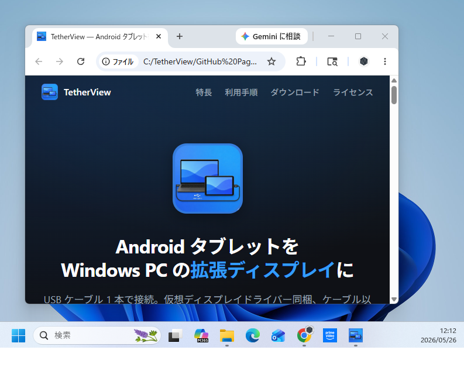

利用手順
Windows PC と Android タブレットを USB ケーブルでつなぎ、ボタン 1 つで タブレットを拡張ディスプレイとして利用できます。
0 事前準備
- Android タブレットで 「USB デバッグ」 を有効にする （設定 → 開発者オプション → USB デバッグ）。
- Android 側に TetherView アプリをインストールする （Google Play から）。
- Windows 側に TetherView-1.0.0-x64.msi をダウンロード・インストールする。 インストール時のみ管理者権限の確認が表示されます。
1 Windows アプリのメイン画面
Android タブレットを Windows PC に USB ケーブルで接続し、TetherView を起動します。 「接続」を押すと現在選択されている画面が投影されて、 「拡張ディスプレイとして追加」を押すと仮想ディスプレイが追加されて マルチモニター化して利用できます。

2「接続」で現在のモニターを投影
「接続」を押すと、現在選択されているモニターの画面が Android タブレットへ投影されます （ミラーリング）。

3「拡張ディスプレイとして追加」でマルチモニター化
「拡張ディスプレイとして追加」を押すと、仮想ディスプレイが追加されて マルチモニター化して利用できます。Android アプリの起動状態を確認した後、 内蔵の仮想ディスプレイドライバーを自動でセットアップし、Windows の 拡張モニターとして登録します。

4 切断・終了
Windows アプリ下部の 「切断」 ボタンを押すか、ウィンドウを閉じると 自動的に仮想ディスプレイがクリーンアップされます。USB ケーブルを抜く前に 切断操作することをおすすめします。
トラブルシューティング
- Android タブレットが検出されない
- USB ケーブルがデータ通信対応であること、USB デバッグが ON であること、 初回接続時はタブレット側で「このコンピュータを許可しますか?」ダイアログを許可していることを確認してください。
- 「拡張ディスプレイとして追加」を押しても画面が真っ黒
- 仮想ディスプレイの初期化に最大 20 秒程度かかる場合があります。表示が変わらない場合は、 いったん切断 → 再度「拡張ディスプレイとして追加」をお試しください。
- ディスプレイの位置を変更後、表示が乱れた
- 切断後に再度「拡張ディスプレイとして追加」を実行することで、現行のディスプレイ配置に 合わせてキャプチャ・ストリームが再初期化されます。
- アンインストール時に管理者権限が要求される
- 仮想ディスプレイドライバー登録の Scheduled Task と関連ファイルの削除のため必須です。